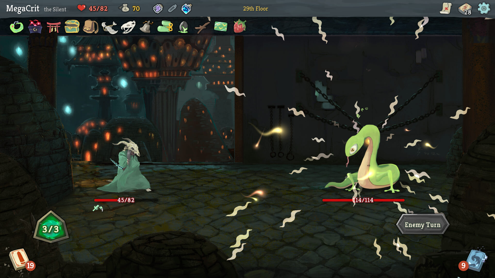

一座由代码筑成的高塔
2017 年 11 月，西雅图一间"远程办公"的办公室里，两个科技行业出身的年轻人把一款融合了牌库构筑桌游与 Roguelike 元素的原型丢上了 Steam 抢先体验。首日销量约 200 份。
没有人能预料到，这款由两人团队开发的"卡牌爬塔"游戏，会在接下来的数年里定义一个全新的游戏子类型。
《杀戮尖塔》由 Mega Crit Games 开发，核心团队最初只有 Anthony Giovannetti 和 Casey Yano 两个人。游戏的灵感来自《皇舆争霸》等桌游的牌库构筑机制，但开发团队做出了一个关键的设计决策：
把 DBG 的卡组构建从"局前准备"改为"局内动态构建"，让玩家在爬塔过程中实时决定自己牌组的走向。
传统卡牌游戏的牌组在对局开始前就已经定好，玩家的任务只是"执行"；而《杀戮尖塔》把构筑本身变成对局的一部分——每一场战斗后的三选一都在改变你接下来能做什么。这一改动配合开发过程中摸索出的意图系统，把"随机"变成"可以提前计算的随机"，在运气的表层之下保留了一层可控空间。
局内构筑解决了"后期套路固化"的问题——牌组一直在变，所以没有一套答案能从头用到尾。 意图系统则让每一次挨打都是自己判断失误的结果，而不是"运气不好"。玩家可以复盘，也就愿意再来一局。
{kind=link}

从 200 份到百万份
游戏发售初期销量惨淡，转机来自中国。一名中国主播发现了这款游戏并进行了推广，随后译者"谜之声"主动承担了汉化工作。在官方中文上线之前，中国市场的销售额一度占到总销售额的 43%。
之后的数据开始变得不一样：
-
2017.11
Steam 抢先体验上线
两人团队的首个作品，上线首日只卖出约 200 份，前两周累计约两千余份。
-
2018.01
中国市场带来转机
一名中国主播的推广让游戏在短时间内被大量玩家看到，它从"前两周仅两千余份"变成当月 Steam 销量榜的第二名。
-
2019.01
正式版发售
结束抢先体验，IGN 给出 9 分评价。
-
2019.03
累计销量突破 150 万份
在 GDC 演讲中公布：中国区贡献约三成销售额，玩家数量在各地区中排名第一。
-
2020.01
第四位角色"观者"上线
随 V2.0 版本更新加入，四个可选角色至此齐备。
-
2026.03
续作《杀戮尖塔 2》进入抢先体验
官方公布首周销量突破 300 万份，Steam 同时在线峰值约 57 万。
续作的势头比初代更猛。除了官方公布的首周 300 万份，分析机构还估算它上市两周多已售出约 460 万套、营收超过 9200 万美元（机构估算数据）。
一个值得注意的细节是：《杀戮尖塔》的成功并不是靠本地化投入换来的。在官方尚未提供中文时，玩家群体已经自己完成了翻译与传播。这从侧面说明，这款游戏的核心体验并不依赖语言理解——卡牌的文字描述都很短，机制说明可以看图，敌人意图更是纯图形信息。
一个品类的定义者
《杀戮尖塔》的行业影响力远超它的体量。它在 Steam 上的 21 万余条玩家评测里有约 97% 是好评，长期维持"好评如潮"评级，并获得 IGN 9 分评价，还催生了"尖塔 Like"这一子类型。
沿用其设计框架的作品遍布各种体量：
国产与手游端的跟进
《月圆之夜》把"爬塔 + 卡组构筑"压缩成更适合移动端的单局长度；《明日方舟》的"集成战略"模式则把这套结构嵌进了一款塔防游戏里。
同品类的直接竞争者
《欺诈之地》在牌组构筑之上加入了叙事与谈判系统；《怪物火车》把单线爬塔改成三层战场，用"位置"替换了"路线"。
更远的回声
大量独立游戏把"三选一 + 单局制 + 永久成长解锁"当成默认模板，这套结构如今已经和 Roguelike 绑定在一起。
它证明了一件事：在有限的预算下，把核心玩法打磨到极致，远比堆砌美术资源更具生命力。两名开发者、一套卡牌、一张随机地图，构成了一个能让人玩上几百小时的系统。
- 《杀戮尖塔》的两个关键设计是局内构筑卡组与意图系统，它们把随机性转化成"可计算的随机"。
- 它的销量结构里中国市场占比极高，而这发生在官方本地化之前。
- 它定义了"尖塔 Like"这一子类型，后续大量作品沿用其框架。
- 续作《杀戮尖塔 2》已在 2026 年 3 月进入抢先体验，官方公布首周销量 300 万份。